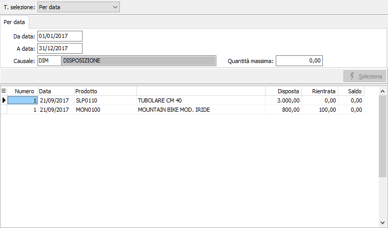
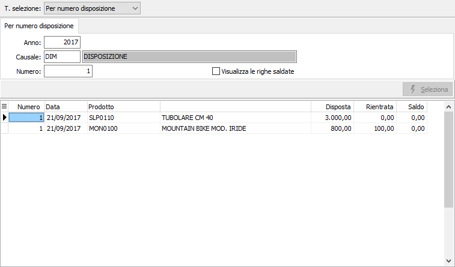

Saldo disposizioni
Il programma consente di visualizzare, in base a due diverse modalità di selezione, le righe delle disposizioni ancora da rientrare, allo scopo di effettuare i saldi per prodotti non più rientrabili.
La finestra video si articola su due sezioni: nella sezione superiore, il pannello di input per inserire i parametri di selezione, varia in relazione al tipo di selezione.
Tipo selezione per data

Sono obbligatoriamente richiesti i limiti di data, relativi alle date delle disposizioni, e la causale per cui analizzare le disposizioni da rientrare; è inoltre possibile specificare una quantità massima da utilizzare come filtro aggiuntivo per selezionare sole disposizioni che abbiano una quantità da rientrare al di sotto della quantità massima inserita.
Confermando i parametri di selezione inseriti tramite la pressione del bottone Seleziona, viene avviata la ricerca e nella griglia della sezione inferiore della maschera video vengono visualizzate le righe disposizione coerenti con i parametri inseriti.
Tipo selezione per numero disposizione

Sono obbligatoriamente richiesti i limiti di anno, causale e numero relativi alla disposizione da rientrare; è inoltre possibile, tramite la spunta della casella "Visualizza le righe saldate", richiamare le righe precedentemente saldate per poter annullare il saldo.
Confermando i parametri di selezione inseriti tramite la pressione del bottone Seleziona, viene avviata la ricerca e nella griglia della sezione inferiore della maschera video vengono visualizzate le righe disposizione coerenti con i parametri inseriti.
Per ciascun rigo disposizione selezionato, vengono visualizzate numero, data, codice e descrizione prodotto, quantità disposta, quantità rientrata. E’ presente anche la colonna Saldo, inizialmente con valori azzerati, eccetto nel caso in cui si stia effettuando l'annullamento del saldo stesso.
L’utente può scorrere le righe e, cliccando due volte sulle righe che si desidera saldare (o annullare); una volta effettuata la registrazione, l'operazione sarà memorizzata definitivamente sulle disposizioni.
Per rendere effettivo la registrazione, è necessario confermare premendo il bottone Salva o il tasto funzione F10.